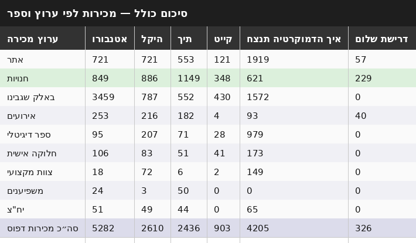
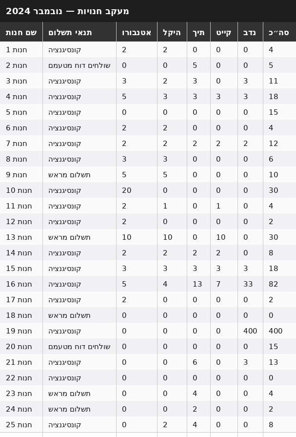

Operations and analytics for 5 published books across 120+ stores — using data and AI to make decisions that usually require a full team.
Stores120+
Titles5 published books
Revenue tracked250,000+ NIS
Books distributed12,000+
The Problem
Israeli book distribution is fragmented — each store has its own terms, return policy, and buyer. Five titles across 120 stores means hundreds of moving parts running simultaneously. I was the operations layer. The books were published by Radical, an independent publisher, which meant we were managing operations without a traditional publishing infrastructure behind us.
A good operations system is invisible. If the answer to "how's distribution?" is "here is the real time data, and these are the next steps" — it's working.
The Data Model
Before managing distribution, I built the analytics to understand it. I tracked every variable that affected whether a book sold: store type, location, buyer relationship, seasonal timing, shelf placement.
Channel pricingThree separate margin models — independents, chains, direct-to-reader. Each with different terms and return rates. Every pricing decision came from the matrix, not gut feel.
Store performanceMonthly sell-through rates per store × title. Flagged underperformers before they became losses. Cut stores below 90-day threshold — freed inventory that moved within two weeks elsewhere.
RevenueFull reconciliation across all channels — orders, invoices, payments, outstanding balances. 250,000+ NIS tracked with zero accounting errors over two years.
Reporting cadenceMonthly, not weekly. Weekly reports produced anxiety. Monthly reviews produced decisions.
The Data in Practice

All books tracked across six sales channels simultaneously. The structure made it possible to compare performance across channels — not just track numbers.

Every store managed on its own terms — consignment, prepayment, or self-reported. Store names are anonymized.
The data drove three types of decisions:
Pricing: Stores that sold consistently got better deals. Stores that sold little moved to prepayment per title — reducing risk without ending the relationship.
Cutting losses: Stores with no movement over several months were dropped. Inventory freed up within two weeks elsewhere.
Channel strategy: Store sales were lower than bulk corporate sales, but higher than the website. The real insight wasn't the numbers — it was what the numbers didn't show: stores required less energy to operate and aligned with our distribution philosophy. Final priority order: stores first, corporate bulk second, website third.
AI as Analyst
I used AI to do things that would normally require a team — market research, competitive modeling, pattern recognition. Here's what that actually looked like:
Specific use cases
Market mapping: Fed AI a brief on the Israeli publishing landscape. Got back a prioritized store list by region and buyer profile. Planned my entire outreach order from it.
Pricing model: Asked AI to model margin scenarios at different volume thresholds per channel. It caught that our chain pricing was leaving ~12% revenue on the table. I adjusted the matrix.
Pattern recognition: Pasted monthly sales data into a conversation and asked what I was missing. It spotted a seasonal dip near university exam periods — invisible in the spreadsheet. I started timing new title drops around it.
Negotiation prep: Before major store conversations, I asked AI to argue the other side and surface weak points in my position. Made me a better negotiator without needing a second person in the room.
Impact
12k+
Books distributed
120+
Stores managed
250k
NIS tracked
2yr
System ran continuously
If I did this today
The agent finds the opportunities. I make the call.
Most of what I did manually — finding new stores, flagging underperformers, modeling pricing — an agent could run continuously. It would come to me with a briefing: here's what moved, here's what didn't, here's what I think you should consider. I make the decision, then feed the result of real customer interactions back in. The agent learns from what I learn in the field.
My constraint was attention. A well-built agent removes that constraint entirely.
let's talk.
Happy to talk through the data model, the pricing matrix, or what I'd change.